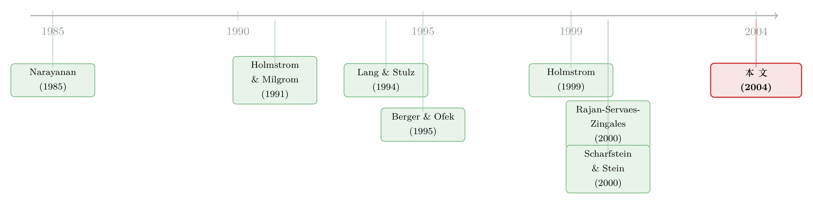

为了「显得能干」，钱都堆去了那块看得最清的业务
本文读的是 Goel, Nanda & Narayanan (2004, Review of Financial Studies)：当各业务部门的现金流对「老板能力」的信息含量不一样时，受职业生涯关切驱动的经理会把看不见的无形资源多投给那块「信息更透亮」的业务，好让外界高估自己的能力；理性的股东预料到这一点，索性把看得见的资本也一起多投给那块业务。于是——没有寻租，没有道德风险型的层级冲突，资本照样被系统性地错配。这是一个「资本错配」可以纯粹由信息与职业关切内生出来的故事。
1 引言：一个 15% 的折价，谁来背锅？
先抛一个老问题。多元化的企业集团 (conglomerate) 到底是不是在毁灭价值？
经验证据相当扎实地指向「是」。Lang and Stulz (1994) 和 Berger and Ofek (1995) 都发现，相对于一篮子同行业的单一业务公司，企业集团交易在大约 15% 的折价上。而这折价的一个来源，被广泛怀疑是内部资本市场 (internal capital market) 的低效——钱没有流到该去的地方。Lamont (1997)、Shin and Stulz (1998)、Rajan, Servaes, and Zingales (2000) 都给出了「资金在部门间被错误调拨」的证据。
那么，钱为什么会被投错地方？
主流的解释，几乎都落在「代理」上。Scharfstein and Stein (2000) 那篇著名的「内部资本市场的阴暗面」说，资本配置是总部「贿赂」部门经理、让他们别去搞破坏价值勾当的最省钱的方式；Rajan, Servaes, and Zingales (2000) 则说，部门经理偏好那些能抬高自己市场身价的投资，总部又无力强制执行最优的剩余分配规则。两条路子虽不同，骨子里都是同一句话：错配，源于总部与部门经理之间签不出（或执行不了）一份好合同。
本文偏要反过来问：如果资本配置完全可以写进合同、完全可以强制执行，部门经理也根本不寻租，资本就不会被错配了吗？
作者的回答是：照样会。而且错配的根，不在部门经理，而在那位坐在金字塔尖、为自己「将来值多少钱」操心的 CEO。
2 一张赌桌：模型的设定
把场景搭起来。一家全股权融资的企业集团，两个业务部门，记为 1 和 2，彼此之间没有协同（作者刻意假设掉协同，好让聚光灯只打在「低效」上）。date 0 投资者雇来一位经理（你可以理解为 CEO 或整个高管团队）经营两块业务，date 1 两块业务的现金流实现。
部门 \(j\) 的现金流写成：
$$ y_j = a + \phi_j(I_j)\,\psi_j(e_j) + \varepsilon_j, \qquad j \in \{1,2\} $$
这里 \(a\) 是经理的（未知）能力，\(I_j\) 是投到该部门的资本，\(e_j\) 是投到该部门的无形资源 (intangible resources)，\(\varepsilon_j\) 是随机扰动。
什么叫「无形资源」？作者举的例子很具体：可以在部门间调动的、对成败至关重要的关键人才；CEO 把自己的注意力、个人精力、领导力倾注到哪一块业务上。它的共同特征是——外人看不见、也无法核实。这正是全篇的命门。
注意那个乘积项 \(\phi_j(I_j)\psi_j(e_j)\)：资本和无形资源是互补的两种投入。两个函数都是正的、递增的、严格凹的（\(\phi_j,\psi_j>0\)，\(\phi_j',\psi_j'>0\)，\(\phi_j'',\psi_j''<0\)），所以期望现金流对两种投入都递增、且边际递减。
扰动项的精度（precision，即方差的倒数）记为 \(\eta_j(I_j,e_j)\)。精度越高，现金流越能透露经理的真实能力——作者干脆把精度直接称为「信息含量 (informativeness)」。两个关键假设：一是 \(\eta_j\) 随部门规模（资本与资源）非增（部门越大，冲击的绝对量也越大，反而越「吵」）；二是两个部门的信息含量天生不同。两部门扰动的相关系数 \(\rho \ge 0\)。
最后是信息结构。能力 \(a\) 服从先验正态 \(a \sim N(\mu_0, h_0)\)（\(h_0\) 是先验精度），连经理自己也不知道自己的能力。资本 \(I_1,I_2\) 和无形资源总量 \(e = e_1 + e_2\) 都是可观测、可签约的；唯独无形资源在两部门间怎么分，只有经理自己知道。每单位无形资源花 1 美元（线性成本，刻意不引入「靠节约成本来解释为什么要多元化」那条暗门）。
报酬呢？没有业绩挂钩的合同，经理事先拿钱。但职业生涯关切 (career concerns) 提供了隐性激励：经理将来要去别处谋职，那份保留工资取决于市场对他能力的感知。为简化，作者令 date 1 的保留工资就等于经理的感知能力。于是——
经理的目标函数被钉死了：最大化投资者对他能力的感知 \(\mu_1\)。而投资者的目标是最大化公司价值 \(V\)。两者并不一致，悲剧就埋在这里。
我们把那个核心的现金流方程拆开看一眼：
读懂这张图，全文的张力就出来了：因为能力 \(a\) 是两块业务共用的同一个未知数，两块业务就成了关于「这位 CEO 到底行不行」的两份信号；而这两份信号的清晰度（\(\eta_j\)）不一样。经理要做的，是利用那只外人看不见的手（\(e_j\) 的分配），去调亮对自己最有利的那份信号。
3 第一优：当一切都能看见
先看作为标尺的第一优 (first-best)。此时信息对称，无形资源的分配也是公开的，投资者能写可执行合同，直接选 \(I_1,I_2,e_1,e_2\) 去最大化公司价值：
$$ \max_{I_1,I_2,e_1,e_2}\; V = \sum_{j=1}^{2}\Big\{\mu_0 + \phi_j(I_j)\,\psi_j(e_j) - I_j - e_j\Big\} $$
一阶条件干净利落（撇号表示导数）：
$$ \phi_j'(I_j^{*})\,\psi_j(e_j^{*}) = 1, \qquad \phi_j(I_j^{*})\,\psi_j'(e_j^{*}) = 1, \qquad j\in\{1,2\} $$
意思就是：每多投一美元资本、每多投一美元无形资源，带来的边际期望现金流恰好等于其边际成本 1。
这里有一句至关重要的观察：第一优解完全不依赖于现金流的信息含量 \(\eta_j\)。在一个没有职业关切的世界里，「哪块业务更能反映老板能力」这件事，对资源该怎么配根本无关紧要——你只看哪块业务的边际产出高。
记住这个基准。下面所有的扭曲，都是相对它的偏离。
4 第二优：当「软资源」藏进了黑箱
现在把那只看不见的手放出来。无形资源的分配只有经理知道，投资者只能选 \(I_1\)、\(I_2\) 和总量 \(e\)，然后猜经理会怎么分——记投资者的信念为 \(e_1^b, e_2^b\)，且 \(e_1^b + e_2^b = e\)。
date 1 现金流实现后，投资者用贝叶斯法则更新对经理能力的看法。两个相关的正态信号，更新出来的后验精度是：
$$ h_1 = h_0 + \frac{1}{1-\rho^2}\sum_{j=1}^{2}\Big[\eta_j(I_j,e_j^b) - \rho\sqrt{\eta_1(I_1,e_1^b)\,\eta_2(I_2,e_2^b)}\Big] $$
后验均值（也就是经理的「感知能力」）是：
$$ \mu_1 = \frac{1}{h_1}\left(\mu_0 h_0 + \frac{1}{1-\rho^2}\sum_{j=1}^{2}\Big[\eta_j - \rho\sqrt{\eta_1\eta_2}\Big]\big\{\,y_j - \phi_j(I_j)\,\psi_j(e_j^b)\,\big\}\right) $$
别被符号吓退，逻辑特别朴素。括号里那一项 \(y_j - \phi_j(I_j)\psi_j(e_j^b)\)，是「部门 \(j\) 的现金流里归因于经理能力的那部分」——把可预期的产出 \(\phi_j\psi_j\) 减掉，剩下的就是能力加噪声。而它前面的系数，就是这份信号的权重。我们给它起个名字：
$$ w_j \equiv \frac{1}{1-\rho^2}\Big[\eta_j(I_j,e_j^b) - \rho\sqrt{\eta_1\eta_2}\Big] $$
后验均值无非是「先验」与「两块业务的能力信号」的一个加权平均。信息含量越高的那块业务（\(\eta_j\) 越大），权重 \(w_j\) 越大；而相关系数 \(\rho\) 越大，赋给先验的权重越小（两块业务合起来给出了一个更精确的信号）。
接着，一个自然的问题是：经理会怎么分配那只看不见的手？
他要最大化自己的期望感知能力 \(E[\mu_1]\)。用一阶方法，对他的信息集取期望（注意 \(E[y_j] = \mu_0 + \phi_j(I_j)\psi_j(e_j)\)），\(E[\mu_1]\) 里唯一随他的真实选择 \(e_j\) 变动的部分，是
$$ \sum_{j=1}^{2} w_j\,\phi_j(I_j)\,\psi_j(e_j) $$
在约束 \(e_1 + e_2 = e\) 下对它求极值，一阶条件是：
$$ w_1\,\phi_1(I_1)\,\psi_1'(e_1) \;=\; w_2\,\phi_2(I_2)\,\psi_2'(e_2) $$
反转就出现在这里。 对照第一优——那里每块业务各自满足 \(\phi_j\psi_j' = 1\)，是把无形资源投到「边际产出等于边际成本」为止；而经理这里压根不管成本，他只是把一笔固定的 \(e\) 在两块业务之间分，并且让带权重的边际产出相等。谁的权重 \(w_j\) 大（也就是谁的信息含量高），谁那边的 \(\psi_j'(e_j)\) 就被压得更低，意味着——经理会把更多的无形资源，倒向那块「看得最清」的业务。
直觉是惊人地干净：无形资源是经理操纵「自己显得多能干」的杠杆，而把杠杆压在信息含量高的业务上，对感知能力的撬动最大。哪怕投资者在均衡里完全识破了这套把戏（\(e_j = e_j^b\)），经理还是会这么干——因为不这么干，市场就会按「他本该这么干」去倒推，他反而吃亏。这是一个不折不扣的、被职业关切逼出来的过度配置均衡。
（这种「老板为了自己的前途、而不是为了股东去做决策」的张力，和《好表现的奖励，不是奖金，而是「明天更大的盘子」》里讲的代理冲突如何写出投资节律，是同一枚硬币的两面。）
5 资本，为什么也跟着「站错队」
到这里，无形资源被扭曲了。但真正反直觉的一步，是理性的股东会主动让资本也一起扭曲。
为什么？作者给了两个相互交织的理由。
第一个，直接的理由。 既然经理铁了心要把无形资源多堆给信息含量高的业务，而资本和无形资源是互补的（那个乘积 \(\phi_j\psi_j\)），那么信息含量高的业务里，资本的边际产出就被抬高了。既如此，股东把更多资本投过去，本身就是划算的。
第二个，更微妙的理由——它牵动经理的激励。 给信息含量高的业务多投资本，会同时触发两股相反的力：
- 生产率效应 (productivity effect)：资本多了，无形资源在该业务里的边际产出更高，经理更想往这块业务追加无形资源——这会加剧扭曲；
- 精度效应 (precision effect)：资本和资源都多了，业务规模变大，按假设其现金流的信息含量 \(\eta_j\) 下降，经理往这块业务砸无形资源的劲头就减弱了——这会缓解扭曲，把无形资源的配置拉回靠近第一优。
只要精度效应占上风，股东多投资本反而能「驯服」经理、提升公司价值。两个理由叠加，结论是：投资者最优地把超过第一优水平的资本，投给信息含量高的业务。而且作者证明，均衡里信息含量高的业务同时拿到了超过第一优的资本和超过第一优的无形资源。
于是，两种资源同时被错配，信息含量高的业务被信息含量低的业务补贴着。如果——往往如此——信息含量高的业务恰恰是那些成熟、投资机会更少的行业，这种「劫贫济富、反向输血」就以企业社会主义 (corporate socialism) 的面貌浮现出来：成熟业务被喂得过饱，而真正有机会的业务反而饿着。
（关于「钱在内部资本市场里到底流去了哪」，以及这种错配在实证上多难干净识别，可对照《拆开来看，钱才流到对的地方》和《拆分真能让公司投得更聪明吗？》。）
6 比较静态：信息差与相关性，如何放大损失
理论模型的份量，往往在比较静态里。本文有两条干净的结论：
其一，价值损失随两部门信息含量的差距单调递增。 道理顺理成章：两块业务的信息含量越悬殊，经理用无形资源去「调亮信号」的诱惑越大，扭曲越狠，毁掉的价值越多。信息含量的错配先毁了无形资源的配置，又顺着互补性把资本的错配一起放大。
其二，价值损失随相关系数 \(\rho\) 递增。 这一条更妙。\(\rho\) 越大，一块业务的现金流就越是另一块的「替身」；此时在更新经理能力时，理性的做法是给信息含量更高那块业务的现金流赋更大权重（回看 \(w_j\) 里的 \(1-\rho^2\) 与那个 \(-\rho\sqrt{\eta_1\eta_2}\) 项）。经理心知肚明，于是更加偏袒信息含量高的业务，资本与无形资源的错配双双恶化。
这条结论带出一个漂亮的推论：在经理的专长范围内做多元化，反而能同时降低资本和无形资源的错配——因为分散化降低了对单一信息含量高业务的过度依赖。这给「多元化到底好不好」的争论提供了一个细腻的、有条件的答案。
7 含义：对冲、分部报告，与追踪股的暗面
模型一旦立住，几个现实含义就自动长出来了。
企业对冲 (corporate hedging) 找到了一个新理由：通过对冲降低现金流里那些与能力无关的噪声，本质上是在调节各业务的相对信息含量，从而抑制经理的扭曲动机。
更尖锐的是对分部报告 (segment reporting) 与追踪股 (tracking stock) 的批评。作者指出：如果根本没有分部数据，经理只能按公司总产出被评价，这反而让他的利益和股东对齐了——因为「把资源在部门间倒来倒去」对总产出毫无帮助，操纵无从下手。正是分部信息的存在，给了经理一条扭曲资源、虚抬感知能力的暗道。这是一项分部报告的内部成本，独立于以往文献（如 Hayes and Lundholm, 1996）强调的「向竞争对手泄密」那种外部成本。换句话说，越是把公司「拆开来给市场看」，越是给了那位 CEO 一面操纵自我形象的镜子。
文献脉络
把这条线捋一捋。
源头有两股。 一股是职业生涯关切：Narayanan (1985) 讲经理为短期业绩而短视，Holmstrom (1999) 给出了职业关切的动态框架——经理在乎的是市场对其能力的感知如何随时间被更新。本文的更新机制（正态信号、贝叶斯后验）正是这一脉的直系后代。另一股是多任务/激励：Holmstrom and Milgrom (1991) 证明在多任务环境里，显性激励合同反而更不值钱——这恰好为本文「职业关切压过工资合同」的前提背书。
另一条线是多元化折价的经验事实：Lang and Stulz (1994) 与 Berger and Ofek (1995) 量出了 15% 的折价；Lamont (1997)、Shin and Stulz (1998) 把矛头指向内部资本市场的低效。随后是理论解释的两座大山：Scharfstein and Stein (2000) 的「贿赂部门经理」说，Rajan, Servaes, and Zingales (2000) 的「部门经理偏好抬身价的投资」说——两者都把错配归到总部与部门经理的层级冲突上。

本文站在哪？ 它把两条线接到了一起，并且做了一个减法：抽掉部门经理的寻租、抽掉合同的不可执行性，单留下「CEO 的职业关切 + 各业务信息含量不同」这一对前提，证明资本错配照样内生而出。它给「错配」找了一个全新的、不依赖层级代理的微观基础。值得一提的是，与此同时，Maksimovic and Phillips (2002) 用工厂级数据、Whited (2001) 用测量误差的视角，都在质疑「错配」到底存不存在——所以本文也可以读作：即便错配真实存在，它也未必来自你以为的那个地方。
（这种「同一现象、多套微观机制各执一词」的格局，在《公司越大，吹牛的人越多》和《好项目，凭什么自己说了算？》里也能看到回响。）
评论与延伸（Q&A + 研究方向）
(a) 几个可能的疑问
Q：这篇和 Scharfstein-Stein、Rajan-Servaes-Zingales 那套「代理说」到底差在哪？
差在「谁是罪魁」和「合同能不能救」。那两篇里，错配源于部门经理的寻租或偏好，且根子是总部签不出/执行不了好合同。本文里，部门经理不寻租，资本配置完全可签约可执行，错配纯粹来自顶层 CEO 的职业关切叠加各业务信息含量的差异。它说明资本错配可以与「CEO 对部门经理的代理问题」「资本配置的不可签约性」全然无关。
Q：经理明明被识破了（均衡里 \(e_j = e_j^b\)），为什么还要扭曲？这不是徒劳吗？
这正是理性预期均衡的微妙处。投资者按「经理会偏袒信息含量高业务」去倒推他的能力；若经理偏偏不偏袒，市场仍按偏袒去解读他的现金流，他的感知能力反而被低估。所以扭曲不是为了「骗到」谁，而是不扭曲就吃亏——这是一个谁都跑不掉的次优陷阱。
Q：股东主动多投资本给信息含量高的业务，听起来像在助纣为虐，怎么会是最优？
因为有「精度效应」兜底。资本与无形资源互补，多投资本既直接划算，又会把该业务做大、压低其现金流的信息含量，从而削弱经理继续往那里堆无形资源的动机。只要精度效应占优，多投资本反而把无形资源的配置拉回靠近第一优。这是一招「以扭曲制扭曲」的次优解。
Q：为什么相关性 \(\rho\) 越高，损失越大，这不反直觉吗——分散化不是好事？
关键在于 \(\rho\) 高时，一块业务成了另一块的替身，更新能力时理性地会更倚重信息含量高的那块（看 \(w_j\) 里的 \(1-\rho^2\) 项）。经理识破后更加偏袒它，扭曲加剧。注意作者的「分散化降低错配」指的是降低对单一高信息含量业务的依赖，与「现金流高度相关」是两码事——后者恰恰让一块业务能替代另一块，反而坏事。
Q：模型说没有分部数据反而更好，这是否意味着该取消分部报告？
不能这么跳。本文只刻画了分部报告的一项内部成本（给了经理操纵感知能力的暗道），它要与分部报告的好处（给投资者更多决策信息、提升资本市场效率等）一起权衡。结论是「分部报告与追踪股有一项此前被忽略的代理成本」，而非「应当废除」。
Q：这套理论可证伪吗？它能落到数据上吗？
这是它最大的软肋。核心变量——无形资源 \(e_j\)、各业务的信息含量 \(\eta_j\)——本就难以观测。可检验的含义偏间接：比如「信息含量差异更大、或部门现金流相关性更高的集团，错配与折价更严重」「采用追踪股后，资源配置的扭曲加剧」。要把这些干净地识别出来，并不容易。
(b) 几个可能的研究问题与提案
1. 信息含量差异与多元化折价的横截面检验
【经济故事】模型预测：两业务现金流信息含量差距越大、相关性越高，错配与折价越深。 【可行性】中。用 Compustat 分部数据构造部门现金流，以现金流对管理层变更/业绩的信号噪声比近似 \(\eta_j\)，以部门现金流相关性近似 \(\rho\)，回归多元化折价。难点在于「信息含量」是个构造量，需稳健的代理变量与安慰剂检验，识别上要小心反向因果。
2. 追踪股/分部披露变更作为准自然实验
【经济故事】本文说分部报告本身给了经理操纵感知的暗道。那么一家公司新设追踪股或显著改变分部披露口径，应当看到资源配置扭曲加剧、且 CEO 的「外部市场身价」更敏感于高信息含量业务的表现。 【可行性】中高。追踪股发行是离散事件，可做事件研究/双重差分 (difference-in-differences, DiD)，对照未发行的同行集团。样本量偏小是现实约束（追踪股本就不多），但识别相对干净。
3. 把机制搬到信用市场：发债主体的「分部信息」与利差
【经济故事】若集团各业务对「管理层能力」的信息含量不同，债权人对违约风险的更新也会被这套信号结构牵着走。一个偏袒高信息含量业务的 CEO，可能让集团的现金流构成系统性偏离基本面，从而影响公司债利差与发行结构。 【可行性】中。需要把模型从「股东评价能力」拓展到「债权人评价违约风险」，并匹配分部数据与债券二级市场利差。理论改造工作量不小，但与公司债定价的实证框架是接得上的。
4. 外资持有人会放大还是抑制这种扭曲？
【经济故事】不同类型的投资者对分部信号的解读能力不同。若外资持有人信息处理能力较弱、更依赖公开分部数据，CEO 操纵感知能力的收益可能更高；反之，信息更灵的本地机构或能抑制扭曲。 【可行性】中低。需把投资者异质性的「信号解读精度」纳入更新机制，并在数据上区分持有人类型与其信息劣势。识别外资的信息劣势本身就是一个独立的难题（这一点上的证据其实相当混杂）。
5. CEO 任期/接近退休如何调节扭曲强度
【经济故事】职业关切的强度随 CEO 距离退休的远近而变。临近退休、外部市场不再重要的 CEO，操纵感知能力的动机减弱，模型预测其集团的资源错配应当更轻。 【可行性】高。CEO 年龄/任期/退休是可观测的，可与分部投资数据、集团折价交互回归，做异质性检验。这是把抽象的「职业关切」落到可测变量上最直接的一条路。
我的判断
贡献。 这篇文章的优雅，在于它的「减法」。它没有去叠加更多的代理摩擦，反而把寻租、把合同的不可执行性统统拿掉，只留下「CEO 的职业关切 + 各业务信息含量不同」这一对极简前提，就把资本错配、企业社会主义、对冲动机、乃至分部报告与追踪股的成本，一口气都推了出来。它告诉我们：「内部资本市场低效」未必是个层级代理问题，它可以纯粹是个信息与声誉问题。这是一个真正意义上的新微观基础。
对识别的担忧。 软肋也恰在这份优雅。模型的两个发动机——无形资源 \(e_j\) 与信息含量 \(\eta_j\)——都极难观测，使得核心机制几乎无法被直接证伪。所有可检验含义都是间接的、构造量依赖的。再者，模型是静态两期、能力一次性更新、经理风险中性、无协同——这些简化里，「无协同」尤其值得追问，因为现实中集团的存在理由往往正是协同，而协同会反过来改变信息含量的结构。
后续想看到什么。 我最想看到的，是把这套「信息含量驱动错配」的逻辑接到一个可观测的杠杆上——比如追踪股的设立、分部披露口径的改变，或 CEO 临近退休——做一次干净的准自然实验，让那个抽象的「职业关切」第一次在数据里显形。再往前一步，则是把它从股东评价能力，搬到债权人评价违约风险，看看这条信息暗线能不能在公司债利差里留下指纹。
参考文献
Aron, D. (1988). Ability, Moral Hazard, Firm Size, and Diversification. Rand Journal of Economics 19, 72–87.
Berger, P., & Ofek, E. (1995). Diversification's Effect on Firm Value. Journal of Financial Economics 37, 39–65.
Billett, M., & Mauer, D. (2002). Cross-Subsidies, External Financing Constraints, and the Contribution of the Internal Capital Market to Firm Value. Review of Financial Studies 16, 1167–1201.
Chevalier, J. (1999). Why do Firms Undertake Diversifying Mergers? An Examination of the Investment Policies of Merging Firms. Working paper, University of Chicago.
Goel, A. M., Nanda, V., & Narayanan, M. P. (2004). Career Concerns and Resource Allocation in Conglomerates. Review of Financial Studies 17(1), 99–128.
Hayes, R., & Lundholm, R. (1996). Segment Reporting to the Capital Market in the Presence of a Competitor. Journal of Accounting Research 34, 261–279.
Holmstrom, B. (1999). Managerial Incentive Problems: A Dynamic Perspective. Review of Economic Studies 66, 169–183.
Holmstrom, B., & Milgrom, P. (1991). Multi-Task Principal-Agent Analyses: Incentive Contracts, Asset Ownership, and Job Design. Journal of Law, Economics, and Organization 7, 24–52.
Lamont, O. (1997). Cash Flow and Investment: Internal Capital Markets Evidence. Journal of Finance 52, 83–109.
Lang, L., & Stulz, R. (1994). Tobin's q, Corporate Diversification and Firm Performance. Journal of Political Economy 102, 1248–1280.
Maksimovic, V., & Phillips, G. (2002). Do Conglomerate Firms Allocate Resources Inefficiently Across Industries? Theory and Evidence. Journal of Finance 57, 721–767.
Narayanan, M. P. (1985). Managerial Incentives for Short-Term Results. Journal of Finance 40, 1469–1484.
Rajan, R., Servaes, H., & Zingales, L. (2000). The Cost of Diversity: The Diversification Discount and Inefficient Investment. Journal of Finance 55, 38–80.
Scharfstein, D. (1998). The Dark Side of Internal Capital Markets II: Evidence from Diversified Conglomerates. Working paper, NBER.
Scharfstein, D., & Stein, J. (2000). The Dark Side of Internal Capital Markets: Divisional Rent-Seeking and Inefficient Investment. Journal of Finance 55, 2357–2364.
Shin, H., & Stulz, R. (1998). Are Internal Capital Markets Efficient? Quarterly Journal of Economics 113, 531–552.
Whited, T. (2001). Is it Inefficient Investment that Causes the Diversification Discount? Journal of Finance 58, 1667–1691.